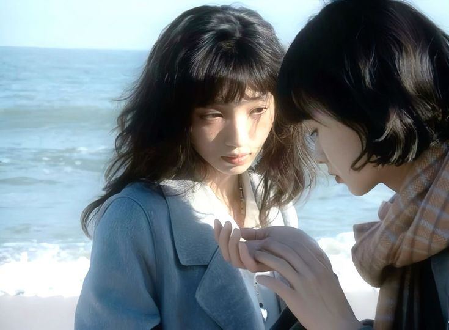

“Twin,
Kill"
Synopsis

"Twin, Kill" is a sci-fi, feature-length script written by Rassvyet. It's a story of bonding love, techno-criminal cruelty, an underground world with fantastical characters, and a girl that thinks that she can run away from pain. But her twin proves her dead wrong.
After her mother's suicide, Lia remained in Toronto only in body. Feeling emotionally untethered from friends, family, and any recognizable sense of home, the city felt like a dystopia. And it was exactly that: an eternally rainy purgatory, lined with pulsing street lights and neon signs. People brushed past her with absent minds, beating the sidewalk with urgent steps going nowhere.
Lectures were spent dreaming of running away, vanishing into the anonymity of a different life. One day, as she was musing in class, she notices a pair of eyes watching her attentively.
This new student was unnoticeable, but he had a look in his eyes of familiar brokenness. As she befriends this boy named Alex, she halts her plans of running away. But his fragility was mistaken for understanding.
One night at a party, he assaults her. The betrayal devoured her last standing hope in a life already defined by loss.
Her mind splinters, her defenses calcify, and in a drunken, manic haze, she stumbles through the city toward an underground crime café, a place where illicit fantasies are transacted in digital silence.
At one of the dimly lit booths, she discovers a hitman service that offers not just murder—but substitution.
The interface promises a clean escape: your perfect doppelgänger commits the crime, and remains behind to take the fall. You vanish, No loose ends guaranteed. It sounds like salvation. Lia places the order.
In the following week, her days and nights blurred into one, and her mind descended into despair, until she receives the text indicating her order is ready. Following the coordinates, she's led to a dilapidated motel on the edge of the city, all blood-red light and humming vacancy. Inside, a gangster with curious, gentle eyes asks her to recount her story. Perhaps out of mercy, or curiosity, or some deeper logic, he listens. And when she finishes, he disappears into the bathroom, returning with a bundle wrapped in a translucent, soaking sheet.
The body inside is Noa—her double. Unconscious, wet and shivering, Noa's pale skin is free from history - no tattoos, no piercings, no slash marks. She is Lia without the ruin. Lia before the silence. Before her grief turned her into a husk. And something in Lia fractures again; not violently, but slowly, like frost melting.
As Noa awakens, it becomes clear that her mind is blank, wiped clean of memory of her past life. She doesn’t remember, or know how to open a car door. She struggles with putting on clothing. But amidst that unawareness, she still smiles at butterflies. She moves with the disarming gentleness of someone who has never been touched by malice. Lia trains her in the art of survival, and then in the art of killing. Coldness. Silence. Focus.
But something begins to grow between them. At first, it’s merely uncanny: they stir their tea in the same clockwise spiral, flinch at loud noises with the same instinct. Then, it becomes intimate. Lia finds herself watching Noa sleep. She begins dressing her. She stops giving orders, and begins asking questions.
What started as a utilitarian relationship shifts into something unnameable—maternal, sisterly, romantic, perhaps all three. Noa becomes more than a clone. She becomes a companion. A mirror. A reminder of what Lia once was, and might still become.
The night of the planned assassination arrives. Noa is sent to do the job. She wears Lia’s black coat, Lia’s gloves. She walks with practiced confidence into the alley where Alex, unsuspecting—or perhaps suspicious—waits. But something goes wrong. A flicker of hesitation. A misstep. Lia, who has secretly followed her, sees it all. Worse: Alex is armed. With a double of his own.
The confrontation erupts quickly. There is no time for speeches, no dramatic pause. Just motion and blood. Lia throws herself between them and ends it. Alex collapses, steam rising from the wound in his chest as the rain falls. The deed is done. The plan, technically, complete.
But in this moment of resolution, Lia faces the choice that had always been buried beneath the logistics: Does she vanish alone, leaving Noa behind as planned? Or has the clone—this ghost of her younger self—become more than an accessory to her pain?
Noa is trembling. Lia was supposed to walk away. But something in her—something long buried—refuses to go.
She reaches for Noa’s hand.
They flee together.

Initial Pitch

While it was conceived in early 2024, "Twin, Kill"'s first pitch is being put out in late 2025. This page is dedicated as a visual guide for the story, when I eventually begin circulating my script to close family & friends.
Twin Kill is a story about processing lonliness and apathy. It takes curious turns through moral crossroads, with complex characters that can't be neatly placed in either the 'good' or 'evil'. These characters are intentionally beyond their descriptors. Friends can be flawed, and enemies can be sympathized for. But for our main character, she must come to terms with the unfair life she's had, to make room for the future potential happiness.
The pain that our main character feels starts to go away when her twin arrives. This twin, being a doppelganger, bears no true genetic similarity to our main character. However, through nurture, the time that the girls spend together makes ripples in each of their neurologies; they become connected in uncanny ways, that is only possible through the hormone of love.
Twin Kill is a multi-faceted story, with side sequences that shiver the story, that make it shed its apathetic air, turning the story into something warm, pulsing with life.
Currently, this story is in its final editing phase. After my dearest friends have read the script, I will make further adjustments before taking the project off-site (you know what i mean).

Dramatis Personae
Lia

Lia, a university student, is the main protagonist of Twin Kill. Her staple outfit is a black leather jacket, boots made to stomp with, and black eyeliner. She's either smoking, riding her motorcycle, or eyeing people suspiciously.
"Fuck these people and this evil city. What can be said of a place that makes sins more fun than virtue? Now add weak lonely people into the mix, and that's gotham for you"
Lia is a tough girl. She was taught early on in her life to rely on no-one. When her mom abandoned her in a train station one day, she vowed to never trust a person's love again. Every friendship and relationship she had afterwards felt like a phantom embrace; she could never fully give in to it. As she approaches the end of her final year, she makes a runaway plan, thinking that she'll just follow her mom's footsteps and leave everything behind.
When Lia meets Noa, she's initially annoyed by the naivety and stupidity of her constant fawning. She feels a resentment building up within her that she thinks must be what her own mother felt towards her. But as she teaches Noa the assasin plan, Lia realizes the beauty in purity, and her protectiveness awakes within her heart. Now that she can feel again, can she bear to abandon a person who loves and depends on her? Can she repeat the pain of her past onto another soul? Is she as corrupted as she thinks she is?
Noa
"Noa" is the property of DPG INC., which is an underground service that provides neurologically engineered humans for purchase and hire. Her legal owner is Lia, but she was altered in a lab years ago. Her life before then is unclear, but glitches in her memory suggest that she was a psychology student who loved butterflies. In Twin Kill, she usually wears softer, brighter colours. When she was cognitively harvested, the technicians at DPG INC., shrunk her capacity for empathy, making her suitable for the needs of most criminals. Thus, she is wired to kill and hunt. But reminisces of a sentimental, tender girl is still present. Why this occured is a question in Twin Kill. According to the instruction manuel, Doubles may malfunction if they are not dethawed correctly. And as we see, Lia left her double unattended during those crucial first 24 hours, which may explain why we see a more 'human' double than the others depicted in Twin Kill.
"Look at those shrunken heads! They're so cute! Can we take them home? Can we, please?"
Noa is an incredibly sweet and loveable character. She sees beauty in the grotesque, fears the harmless, but protects Lia with a ferocity of a thousand tigers. Her amygdala is superwired, which gives her access to strength that only occurs when our adrenaline is at peak. Bodybuilders don't stand a chance against a loyal, neuromaxxed girl.
X

X is the owner of DPG INC. He frequents all the underground crime cafes, with the aid of his 2 freakishly tall doubles (with whom he speaks an unidentified language with). He's a character neither good or evil. When Lia stumbles into the cafe in a drunken haze, he offers his services to her, with the intention of gifting her something he thinks might help her. However, the nature of the game knows no loyalty. He also provides service to her enemy in Twin Kill, Alex.
"Don't imply favouritism among my clients. I'm not for that."
X is, nonetheless a caring character for Lia. Although he'll never admit it, he watches over her during the many underground parties that take place throughout Twin Kill, ensuring to step in when needed. He's full of curiousity, and knows when to push back on Lia's pessimism. This provides a form of irony, since his enterprise is an utterly sadistic one. Needless to say, Noa is not a fan of him, but the two provide the audience with comedy in their spiteful exchanges.
X: "Oh, how pleasant to see you both. Hi again Noa dear - i hope you've calmed down now and seen I'm a totally nice gentle-."
Noa stares on, with a deadpan glare, stabbing the icecream in her bowl.
Alex

Alex is both the victim and enemy. He befriends Lia during a party, tricks her into giving him a chance on account of being new and friendless. He tries to take advantage of her in a basement of a party, not knowing that he took the last straw. He becomes the perfect target for Lia. She takes him out, she'd be leaving toronto in a better state than when she was living there. That's a fair outcome, she thinks. But perhaps she underestimates the commonality of evil. In her own words, this city breeds sin. But can she plan a crime faster than a psychopath can? Throughout the parties and craze of Twin Kill, Alex is looming around the scene. She has to stomach the bastard that took her dignity. Not for long, though.
"I have a feeling like I need protection, I need to watch my back..."
As a promised motif of Twin Kill, no character is simply evil. Alex craves love, but can't get it. He tries to steal it, to force it out of the world, not knowing that his method doomed to only prophesize the opposite. He develops an obsession for Lia, something that she can ambiently feel. However, the danger is doubled, since Alex cannot distinguish between Noa and Lia. Let's pray they never run into eachother before the assasination date.
Bjorn & Josefine

The Beast is the show's primary antagonist. He is always cloaked in darkness and has a human silhouette and branch-like. His only discernible features beyond that are his glowing white eyes.
"No. There is only me. There is only my way. There is only the forest, and there is only surrender."
Little is known about the Beast other than that he lures children deep into the woods to turn them into Edelwood trees. He enjoys taunting the Woodsman with his daughter's fate and stalks Wirt and Greg through the Unknown. Most residents of the land know of and fear him; he spends his time wandering the wilds, singing eerie opera songs.
Others

Wirt and Greg meet many more inhabitants of the Unknown, such as heartbroken school teacher Ms. Langtree, eccentric quadrillionaire Quincy Endicott, and the animated skeletons that inhabit Pottsfield. Most of these characters are confined to their own episodes, Wirt and Greg's wanderings delivering a snapshot of what life is like in the Unknown.

We are also introduced to several characters from back home during a flashback episode, such as Sara, a cool, nerdy girl who Wirt has a crush on, and Jason Funderburker, Wirt's self-proclaimed rival. These characters are wonderfully weird in their own way, but highlight how bizarre the varied personalities of the Unknown are in comparison.
Each character we meet has a unique style that distinguishes them from all the rest. From Margueritte Grey's ghostly glow to the Tavern Keeper's rosy cheeks, everyone's personhood and manner is reflected in their dress and design!
Media Guide

There's a lot of content available for both anyone who wants to take their first journey into the Unknown and everyone who's revisiting it. From music to books, I tried to compile everything you'll need to rival even the Beast's knowledge of the Land of the In-Between! This includes video, books and comics, and audio.
Over the Garden Wall: Obviously, the first thing you'll need to get your hands on is the miniseries itself. Nothing compares to the experience of curling up in bed with blankets, pillows, tea, and the opening chimes of Into the Unknown playing over laptop speakers!

Tome of the Unknown: Harvest Melody: This is the show's pilot episode. It aired in 2013 and now exists as a sort of bonus episode that isn't officially part of the ten mainline episodes. The whole thing has been posted to Youtube by Cartoon Network, and features a lot of vegetable people. You can watch it here!

10th Anniversary Short: As the title suggests, this is a short video created for the show's 10th anniversary—and it's entirely in stop-motion! The whole thing is up on YouTube; you can watch it here, alongside a short behind-the-scenes video, here!

Art of Over the Garden Wall: This is a truly beautiful book that chronicles the creation of the show, and is a must-read for any fan. It features hundreds of pieces of concept art, backgrounds, and character designs, as well as notes from all sorts of crew members. The book itself had a limited release and sells for well over 800 dollars on eBay, but a high-resolution scan of it is available for free on the Internet Archive. You can access it here!
The Over the Garden Wall comics series: The show spawned an entire series of comics published by Boom! Studios. The first one was released in October of 2014, and since then, a whole slew has followed. They feature different art styles and authors, but all of them expound on the adventures Wirt and Greg had in the Unknown. The run has been listed on the show's Fandom page, and you can see the list here. They're often available on digital library apps, such as Hoopla.

The story of Over the Garden Wall with songs: This fully-narrated account of the adventures the show chronicles is a charmer. It features original illustrations, and is a fun flip-through for anyone interested! It was uploaded to Youtube in 2017 by user "Henrique Paredes Ferreira"; this is the only available record, as far as I can tell. You can access it here! The book came with a vinyl, but unfortunately, as with the artbook, copies of this work only sell for crazy amounts of money.

Over the Garden Wall (Original Television Soundtrack): The series' soundtrack, which plays a tremendous role in establishing the Unknown's atmosphere, was created by American folk band The Blasting Company. It features, amongst others, the voices of country blues musician Blind Boy Paxton, and opera singer Samuel Ramey (who also provides the Beast's voice)! The soundtrack had its own vinyl release, featuring original spread artwork and designs; you can see them on page 175 of the artbook. You can listen to the album on the band's Spotify page here!
Sketches of the Unknown: This is an EP put out by The Blasting Company in 2020 that contains six previously unreleased songs created for the show. Their content leads to believe that these were songs used to get the right feel of the music before creating the official soundtrack, as shown above; my very favourite of these is The Tithing Man, which hearkens back to folktales and myths of yore. You can listen to it on the band's Spotify page here!

For Sara: This Mondo cassette is meant to be a reproduction of the cassette Wirt created for Sara in the penultimate episode of the show. It features original poetry and music (created, again, by The Blasting Company), all meant to have been created by Wirt. The cassette is an absolutely charming companion to the series, and was posted to Youtube in 2017 by user "Demighoul". I highly recommend sitting down to listen to the 20-something minutes it runs for! You can listen to it here! The cassette itself is available for purchase on Mondo's shop, here.

Episode Guide
The following is a list of all ten episodes of Over the Garden Wall, as well as a brief synopsis of each
Chapter 1: The Old Grist Mill

Wirt and Greg, lost in the Unknown, encounter the mysterious Woodsman. He offers them shelter in his mill and warns them against the dangers of the Beast, who stalks the land and steals children such as themselves.
Wirt: Greg! I, I think we're lost! We, w-we should've left a trail or something.
Greg: I can leave a trail of candy from my pants!
Trivia: The design of the dog that terrorizes the brothers in this episode was inspired by an old illustration from Hans Christian Anderson's story The Tinderbox.
Chapter 2: Hard Times at the Huskin' Bee

Wirt and Greg, now accompanied by the bluebird Beatrice, come across the town of Pottsfield, which is populated entirely by what they think are people dressed in pumpkin costumes. They run into trouble and are judged by its leader, Enoch.
Enoch: So, by the order of the Pottsfield Chamber of Commerce, I find you guilty of trespassing, destruction of property, disturbing the peace... and murder.
Trivia: In a proposed version of the intro, Enoch could be seen in human form coming to Pottsfield. The idea was that he was a drifter who came to Pottsfield in order to take over the town and create a death cult.
Chapter 3: Schooltown Follies

Wirt, tired of being called a pushover by Beatrice, decides to act as one fully. This leads him to become a pupil at Ms. Langtree's school for animals while Greg plays hooky.
Ms. Langtree: 'A' is for the apple that he gave to me, but I found a worm inside...
Trivia: Character designer Nick Cutter was the one to insist on including a scene towards the end of the episode where Mr. Langtree wipes a tear and it clings to his finger. It was meant to refer to a trend in old kids' cartoons that had scared him as a child!
Chapter 4: Songs of the Dark Lantern

Wirt, Greg, and Beatrice enter a tavern at night looking to ask for directions, but in order to get them, they first have to deal with the patronage's eccentricities.
Wirt: My name is Wirt and his name is Greg / We're related 'cuz my mom remarried and then gave birth to him with my stepdad... / We're not from around here / Can you all give me some directions today? / So we can be on our / Wa-a-a-a-y?
Trivia: The Edelwood tree seen in this episode is supposed to represent the final resting place of the people inside the Dark Tavern. Originally, it was supposed to mark the grave of Civil War soldiers who had fallen asleep under it.
Chapter 5: Mad Love

Wirt, Greg, and Beatrice, in the pursuit of change to ride a ferry, must help the wealthy but slightly loony Quincy Endicott solve the mystery of a beautiful yet terrifying ghost that has been haunting his massive estate.
Endicott: Yes, tea! That's my trade! 'Quincy Endicott's Health Tea'.
Greg: Your tea sounds good.
Endicott: Ugh! Never touch the stuff myself.
Trivia: Because the Unknown is informed by Wirt's interests, Endicott, too, is a character from Wirt's real life. In Ep. 9, you can see a tombstone bearing Endicott's name!
Chapter 6: Lullaby in Frogland

Now aboard the ferry, Wirt, Greg, and Beatrice have a chance to relax. However, once they disembark and secretly trail Beatrice to Adelaide's house, Wirt and Greg discover that Beatrice hasn't been entirely truthful with them.
Wirt: What's wrong with George Washington being naked?
Trivia:Writer Amalis Levari was the one who provided the idea for the scissors Adelaide holds over Beatrice's head. They're inspired by a real pair of scissors Levari's mother showed her, and they pay homage to how her mother was the one to teach her textile arts.
Chapter 7: The Ringing of the Bell

Stung by Beatrice's betrayal, Wirt and Greg seek shelter in what they assume to be an abandoned cottage. Things get complicated when they meet its residents: Lorna, and her Auntie Whispers.
Woodsman: Stop! Listen! The Beast knows your presence, ready to claim you as part of his dark forest, but only if you give up! Keep hearty in both body and spirit and you shall be safe from him. Fall ill or lose hope and your life shall pass into his crooked hands. Children, please heed my warning! Boys, beware the Beast!
Trivia: The mystery of the black turtles was one the show writers never intended to solve, but it was clearly hinted that they represented some form of evil to the Unknown. Auntie Whispers serves as a sort of sin eater to counter Adelaide, but the devouring of the turtles has clearly had an effect on her.
Chapter 8: Babes in the Wood

Exhausted, Wirt has a one-sided argument with Greg before the pair fall asleep beneath a tree. While sleeping, Greg has a strange dream at the end of which he finds out Wirt cannot leave the Unknown since the Beast has laid claim to him.
Wirt: I don't know much of anything anymore.
Greg: Oh. Did you know that dinosaurs had big ears but everyone forgot 'cuz dinosaur ears don't have bones?
Trivia: In the background of Greg's dream, you can see a little gnome of an old man, dressed like Wirt and holding a lantern.
Chapter 9: Into the Unknown

It's Halloween, and Wirt has finished recording a cassette for Sara, his crush. Greg decides to help Wirt deliver it to her when Wirt backs out, but this has unintended consequences for the pair.
Greg: Thank you, Old Lady Daniels!
Mrs. Daniels: Goodbye, Gregory. And please don't call me 'old lady'.
Greg: Yes, sir, young man!
Trivia: Patrick McHale wanted all of the kids in the background to look like they were wearing homemade costumes because he likes the authenticity this lends. He dislikes storebought costumes because they look artificial and nothing like the character being represented.
Chapter 10: The Unknown

Wirt and Beatrice hunt down Greg in the middle of a snowstorm, and are horrified to find the Beast seems to have taken him. The pair must make one last stand against their otherworldly pursuer, lest they lose Greg forever.
Beatrice's Mother: Now, eat your dirt!
[The whole family laughs genially.]
Trivia: Patrick McHale wanted this episode to feel like an opera because of how prominent the Beast is in it. The backgrounds and lighting are all meant to emulate the feeling of a stage, and the team toyed with the idea of having the sounds of an orchestra warming up playing in the background.
Art Gallery
It's impossible to stress enough how lovely Over the Garden Wall's art is. I love zooming in on concept illustrations and backgrounds featured in the artbook because there's so many little details that pop out and really show how much love and care went into the making of this show. I've put together some of my favourite pieces in this mini-gallery. The list is mostly chronological.

The colours in this picture are so lovely... I want to live in it forever!

This is the blackberry bush Beatrice gets 'caught' in in Ep. 2.

The original design of the Woodsman—a nightmarish face in the dark.

I love the colours and the trees in this illustration. Hi, Mr. Woodsman!

I so adore the Beast we see in the show, but the concept sketches are amazing, too.

These sketches makes me feel all of Wirt's loneliness. It's like we're getting a glimpse into something we weren't meant to see.

There's several landscapes like this one in the artbook, and they all take my breath away.

Something about the red silhouettes makes a shiver go up my spine.

This house raises so many questions: Who lives here? Are they still there? Why is the side door open?

This version of the Edelwood is so disgusting—I love it!

This art elicits such a feeling of voyeurism.

The Edelwoods as a whole are such an eerie concept.

This group of Pottsfielders is so goofy. I love their little haunted faces.

All of the art done for Mad Love is so rich and detailed, but I like this one the best. There's so much to see!

Despite the horror of who Adelaide is and what she does, I love her room—it feels so cozy.

Again, the art that shows the character's silhouettes in red is all so horrifying to me.

The stark figure of this tree is so evocative. The scene feels terribly empty and cold.

The clutter of Wirt's desk is rendered so wonderfully here.

As with Adelaide's room, this room from the party house is so comfortable-looking.

This one makes me emotional; in saving Greg, Wirt finally gets to be the romantic hero he's always wanted to be.

This painting is so still, and perfectly captures the feel a snowy evening.

This screenshot does these thumbnails no justice; see all of them on pg. 166 of the artbook.

This shot of the Beast revealed at last is so amazing, in everything from his form to his expression.

I love the frog here.

GORILLA!!

They are so small here...
Over the Garden Wall and Me!
Obviously, I made this page because (surprise, surprise!) Over the Garden Wall means a whole lot to me. I first watched the show when I was in Sec. 8, and it was basically love at first sight.

I can't really explain the weird degree of comfort I get from getting lost in the quiet pastoral towns, deceptively wonderful winter wonderlands, and dense forestation of the Unknown, but know it's a lot! Every time I rewatch this show, I notice something new, and it always surprises me just how much such a short show was able to pack in.
My favourite episode is probably 'Songs of the Dark Lantern' by a hair. I love the varied personalities we're introduced to, the silly songs, and the confrontation with the Woodsman. My favourite character is eiter Wirt, the Woodsman, Beatrice, or Greg, but that's basically the entire main cast so it's a moot point. My favourite songs off the soundtrack are 'Patient is the Night', 'Send Me a Peach', 'A Courting Song', 'Tome of the Unknown', and 'Black Train/End Credits'!

I love watching it with my friends or with my siblings, or just by myself. I love listening to Ms. Langtree bemoaning the loss of her beloved Jimmy, and I love the weird rotoscope-y animation of the Highwayman's song. I love the Woodsman and his tragedy, and I always sniffle a little when Anna, his daughter, returns home in the epilogue. I love Enoch and his contemplative voice, and I love the sprawling expanse of the joint Endicott-Grey mansion. I always look forwards to getting to rewatch it when Fall rolls around.

All that to say, I hope you liked reading through this page
almost as much as I liked spending hours making it, and I hope it's
inspired you to watch the show if you haven't, and made you think about
it if you have!
That's goodbye for now...
With much love,
Tehsin!